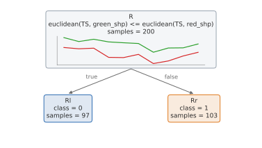
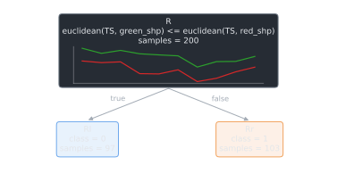
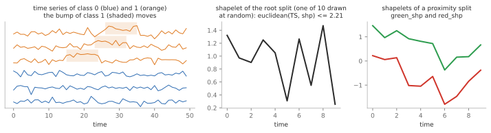
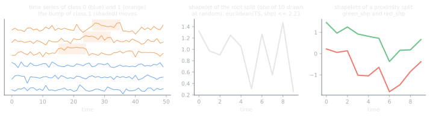

Tabular data, time series and images#
A RuleTree can be trained on several types of data at once, as long as they describe the same
instances. Each type has its own argument of fit, predict, predict_proba and
apply:
Argument |
Data type |
Shape |
|---|---|---|
|
|
(n_samples, n_features) |
|
|
(n_samples, n_signals, length) |
|
|
(n_samples, …) |
|
|
(n_samples,) |
The type is given by the argument, not by the shape of the array: a 3D array passed as X is
tabular data. Each stump declares the data types it supports (supported_data_types), and the
tree uses each stump on the types it supports among the ones given to fit.
Time series#
The examples use synthetic time series: the series of class 1 have a bump, at a different position in each series.
import numpy as np
rng = np.random.default_rng(0)
y = rng.integers(0, 2, size=200)
X_ts = rng.normal(scale=0.4, size=(200, 1, 50))
starts = rng.integers(5, 35, size=200)
for i in np.where(y == 1)[0]:
X_ts[i, 0, starts[i]:starts[i] + 10] += 1.0
The decision tree stump flattens the time series into one feature per time step, so each split is a threshold on the value at a given time:
from RuleTree import RuleTreeClassifier
model = RuleTreeClassifier(max_depth=2, random_state=0).fit(X_ts=X_ts, y=y)
print("accuracy:", round((model.predict(X_ts=X_ts) == y).mean(), 3))
print(model.get_rules()["textual_rule"])
accuracy: 0.81
X_19 <= 0.556
Note
score follows the scikit-learn signature score(X, y), so it works only with tabular
data: with other data types, compare the predictions with the target explicitly, as above.
Since the bump moves, no single time step separates the classes well. The shapelet stumps (which
need the shapelets extra, see Getting started) split
on the distance from a shapelet, a subsequence of one of the training series: the distance of a
series from a shapelet is its smallest distance over all the positions, so it does not depend on
where the bump is:
from RuleTree.stumps.classification import DecisionTreeStumpClassifier, ShapeletTreeStumpClassifier
shapelets = ShapeletTreeStumpClassifier(n_shapelets=10, sliding_window=10, selection="random")
model = RuleTreeClassifier(max_depth=2, base_stumps=shapelets, random_state=0).fit(X_ts=X_ts, y=y)
print("accuracy:", round((model.predict(X_ts=X_ts) == y).mean(), 3))
print(model.root.stump.get_rule(float_precision=2)["textual_rule"])
accuracy: 1.0
euclidean(TS, shp) <= 2.21
plot_tree draws a shapelet tree with the plot of the shapelet in each node (see
Reading the tree).
The proximity stumps compare two shapelets instead: the series closer to the first one than to the second one go left, with no threshold. They fit classes that differ in the kind of pattern rather than in how close a series is to one of them, e.g. a bump against a dip:
from RuleTree.stumps.classification import ProximityTreeStumpClassifier
rng_shape = np.random.default_rng(1)
y_shape = rng_shape.integers(0, 2, size=200)
X_shape = rng_shape.normal(scale=0.4, size=(200, 1, 50))
for i, start in enumerate(rng_shape.integers(5, 35, size=200)):
X_shape[i, 0, start:start + 10] += 1.0 if y_shape[i] == 0 else -1.0 # a bump or a dip
proximity = ProximityTreeStumpClassifier(n_shapelets=6, sliding_window=10, selection="random")
model = RuleTreeClassifier(max_depth=1, base_stumps=proximity, random_state=0).fit(X_ts=X_shape, y=y_shape)
print("accuracy:", round((model.predict(X_ts=X_shape) == y_shape).mean(), 3))
print(model.get_rules()["textual_rule"])
accuracy: 0.985
euclidean(TS, green_shp) <= euclidean(TS, red_shp)
The two shapelets of the split are model.root.stump.st.shapelets, the first one green and the
second one red in the drawing of the tree:




model.plot_tree(): the rule of the root and its two shapelets, green and red as in the
rule.#




Left: some series of the data set above, where the bump of class 1 is at a different position in each series. Center: the shapelet of the root split of the shapelet tree. Right: the two shapelets compared by the proximity stump, a bump (green) and a dip (red).#
Several data types together#
When several types are given, the candidate splits of each node are the pairs (stump, data type) supported by the stumps. Here the tabular features describe the instances only partially, and the time series are needed to separate the classes:
X = np.column_stack([rng.normal(size=200), y + rng.normal(scale=1.5, size=200)])
model = RuleTreeClassifier(max_depth=3, stump_selection="best", random_state=0,
base_stumps=[DecisionTreeStumpClassifier(), shapelets])
model.fit(X=X, X_ts=X_ts, y=y)
for probability, stump, data_type in model.candidate_splits_:
print(f"{type(stump).__name__} on {data_type} data, probability {probability:.2f}")
print("accuracy:", round((model.predict(X=X, X_ts=X_ts) == y).mean(), 3))
DecisionTreeStumpClassifier on tabular data, probability 0.25
DecisionTreeStumpClassifier on ts data, probability 0.25
ShapeletTreeStumpClassifier on ts data, probability 0.50
accuracy: 1.0
The decision tree stump supports both types, so it is a candidate on both; the probabilities are
used with stump_selection="random": the probability of each stump is split equally among its
data types. To use a stump only on some types, give them as third element of the tuple:
model = RuleTreeClassifier(max_depth=3, random_state=1,
base_stumps=[(0.5, DecisionTreeStumpClassifier(), "tabular"),
(0.5, shapelets)])
model.fit(X=X, X_ts=X_ts, y=y)
for node_id, node in model.get_predicates().items():
print(node_id, type(node.stump).__name__, node.stump.data_type_)
R DecisionTreeStumpClassifier tabular
Rl ShapeletTreeStumpClassifier ts
Rr ShapeletTreeStumpClassifier ts
The data type used by a fitted stump is stored in data_type_.
Important
predict must receive the same data types given to fit. The clustering trees support
only tabular data.
Unsupported data#
If none of the stumps supports the data given to fit, the tree raises an error; if some data
type is not used by any stump, it is ignored with a warning:
import warnings
try:
RuleTreeClassifier(base_stumps=shapelets).fit(X=X, y=y)
except ValueError as error:
print("error:", error)
texts = np.array(["a text"] * 200)
with warnings.catch_warnings(record=True) as caught:
warnings.simplefilter("always")
RuleTreeClassifier(max_depth=1).fit(X=X, X_txt=texts, y=y)
print("warning:", caught[0].message)
error: None of the base stumps supports the provided data (tabular).
warning: No base stump uses the text data: it will be ignored.
No stump of the library supports texts yet: they can be supported by a new stump with a transformer that turns texts into features (see Extending the library).